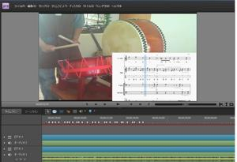
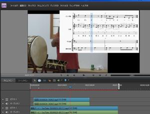
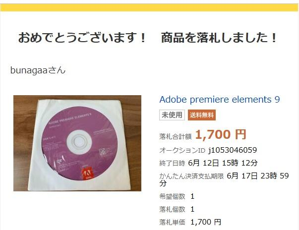

うるがいの話 ある日
最新: お導きかな【うるがいの話 ある日】とは 一日だけのプログです
『うるがいの話』の最新一日だけのプログで、通信料が少なく経済的だ。カニの画像をクリックすると全ての日付が載る『うるがいの話』サイトを表示します
|
|
【うるがいの話】 うるがい(ｳﾙｶﾞｲ urugai)とは、『もずくがに』の名前でとても大きくなります。 |
|---|---|
|
|
【カミマヤーの話】 猫のことを方言でマヤーといいます。カミマヤー（kamimayaa）とは、神の猫のことです。 |
|
【たながぁの音楽】 たながぁ（ﾀﾅｶﾞｰ tanagaa）とは手長えびのことで、何種類かあり大きいのは車 エビぐらいになります。 |

|
【ぶながぁの話】 ぶながぁ(ﾌﾞﾅｶﾞｰ bunagaa)とは、赤い髪の毛、赤い身体、そして身長は１ｍ２０ｃｍ ぐらい、川の蟹を食べているの目撃された。場所は沖縄県国頭郡大宜味村のと ある村僕の隣近所に住んでいる爺さんから、聞いた話です。 |
|
|
【ギーマの話】 ギーマ(giima)とは、山原の里山に咲くスズランに似た、 花を付けます。実は食べられます、 気が付くと口の周りが紫になっています。 |
2024年07月05日 (金）お導きかな
16:41
 
『唐船ドーイ』工工四まで作成を終える。あとは、最後のチェックのみで明
日リリース予定である。島太鼓を取り込むにあたり、耳コピー能力がないの
で聞いても楽譜に落とすことができない。ユーチューブ動画では、おばさん
とオジサンが、上手に島太鼓をたたいている。ビデオ編集ソフトウェアを利
用し、動画の画像をコマおくりし、島太鼓を打つタイミングをひろう。
事前に作成した『唐船ドーイ』の演奏楽譜を、同じテンポ（これが、とても
難しい！、不可能だが割り切る）で、画像を並べるとなんとなく、ドラム譜
に落とすことが出来る。ちなみ彼らは、全然リズムのパターンがない！、の
で正しくできているのか不明。

このビデオ編集ソフトウェアの最新は、２０２２年９月の那覇市の動画編集
の副業研修の時では月額４千円、とてもじゃないが（副業案件はゼロだった
・・・・）。その数か月前の２０２２年６月に２０１０年１０月発売の【Ａ
ｄｏｂｅ Ｐｒｉｍｅｒｅ Ｅｌｅｍｅｎｔｓ９】を千七百円で落札してあ
った。副業研修はそれなりに、スキルアップになって島太鼓のリズム解析の
役立っている。ウーン、なんか繋がっているような、師匠だとお導きだとい
ゆうのだろう。
ビットコイン、本日も暴落！！。
１６時２８分 ビットコインの総資産 ￥２５、３２４（↓２、０６５）